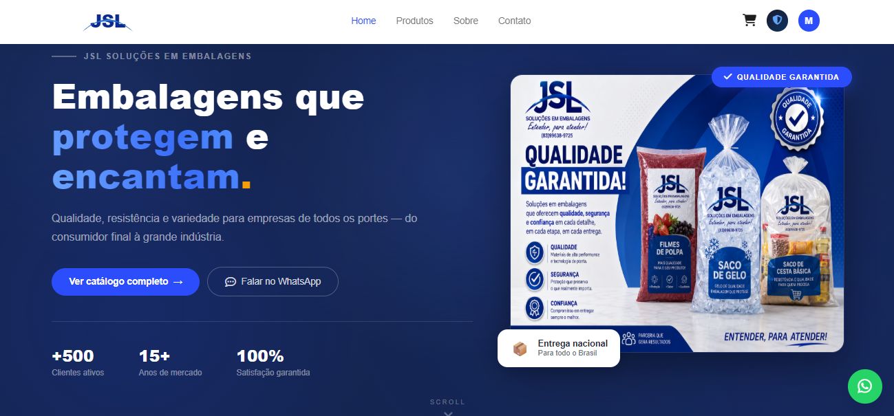
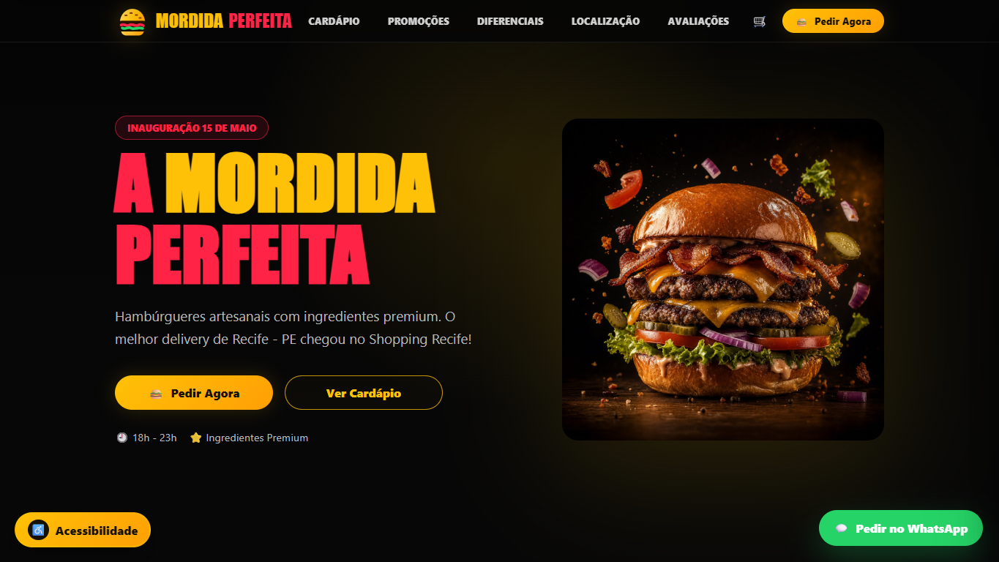
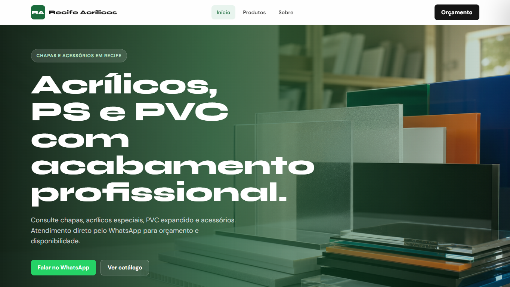
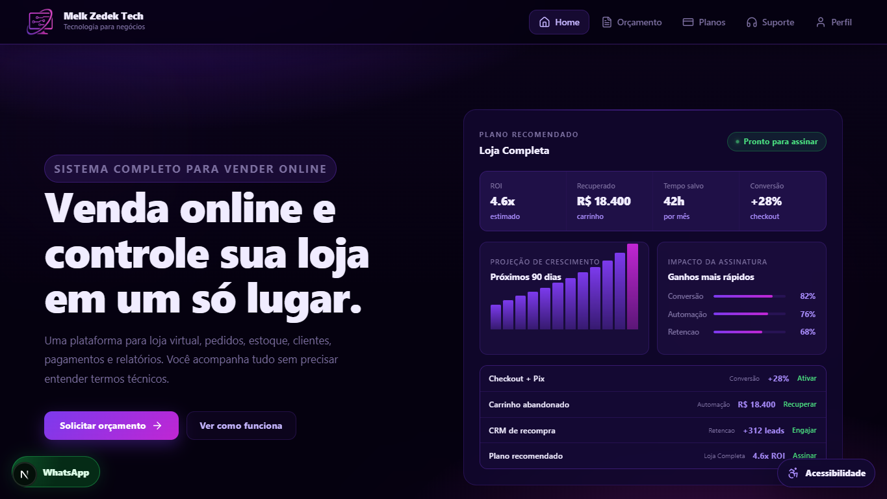
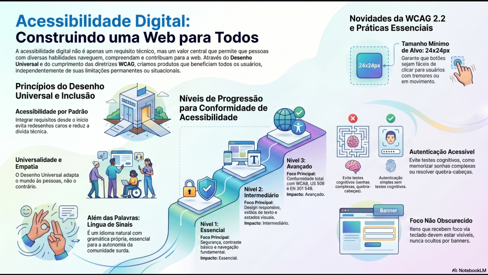
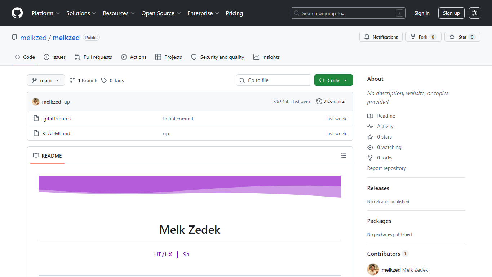
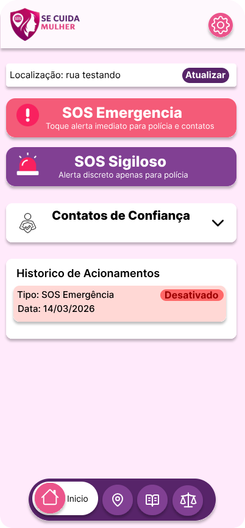
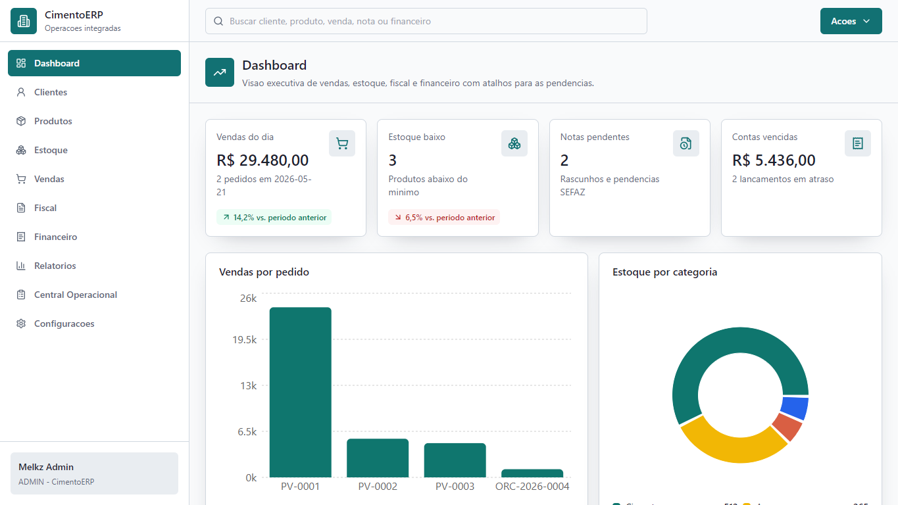
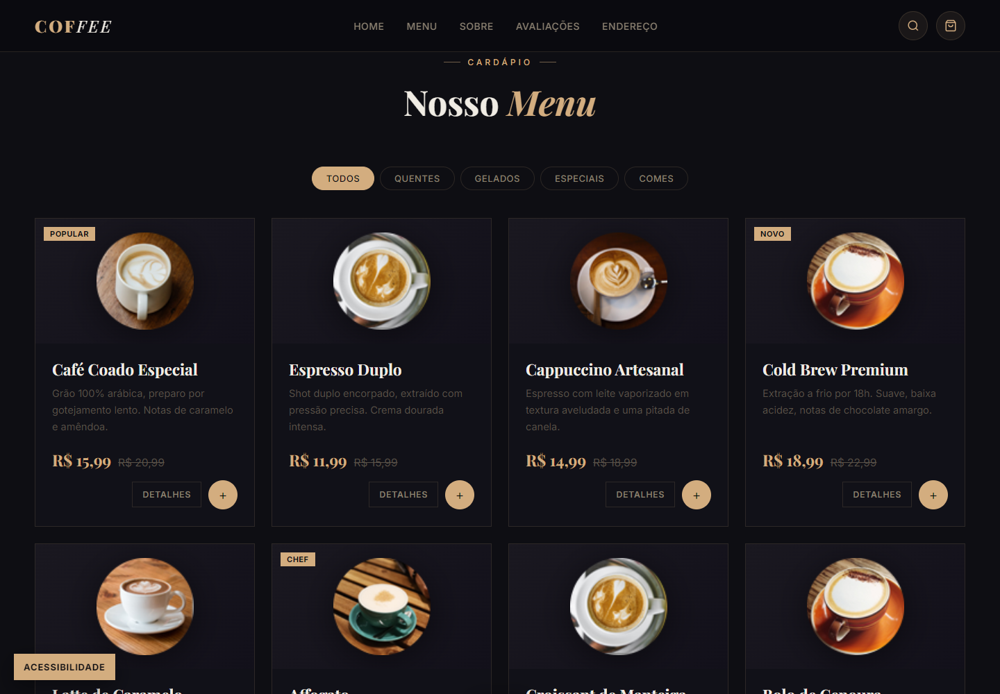
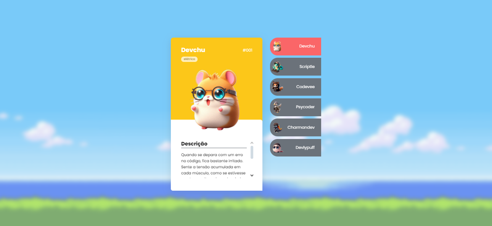

Melk Zedek
Programador web | JavaScript | Python | SQL | Front-end | UX e UI
Programador web | JavaScript | Python | SQL | Front-end | UX e UI
Melk Zedek, desenvolvedor Front-End com experiência em HTML, CSS, JavaScript, animações avançadas com GSAP, criação de interfaces no Figma, UX/UI, responsividade e boas práticas de código. Conhecimento em Python (Pandas), SQL, Git/GitHub, Next.js e WordPress. Forte atuação em projetos reais com foco em performance, design moderno, usabilidade e organização. Apaixonado por tecnologia, constante evolução e entrega de soluções eficientes e profissionais.

Site institucional da ONG CCB de Recife, uma organização dedicada ao acolhimento da comunidade. A instituição promove eventos, ações sociais e projetos educativos voltados ao desenvolvimento social, educacional e cultural de crianças e adolescentes.

Projeto desenvolvido com foco na otimização de processos administrativos e controle operacional para uma empresa do setor logístico. A solução foi pensada para centralizar informações, agilizar rotinas de faturamento e melhorar a organização interna da empresa. O sistema contempla funcionalidades voltadas para controle de dados, lançamentos, gerenciamento de informações fiscais e acompanhamento de processos operacionais, proporcionando mais eficiência e praticidade no dia a dia da equipe.

Cardapio digital responsivo para hamburgueria delivery, com busca, filtros por categoria, montagem personalizada, carrinho salvo no navegador e checkout enviado pelo WhatsApp.

Catalogo digital multi-pagina para Recife Acrilicos, com produtos por categoria, modal de variacoes, carrinho de orcamento e envio direto pelo WhatsApp.

Plataforma premium para venda e aluguel de roupas, com login, perfil do cliente, orcamento guiado, assinaturas, suporte e painel administrativo.

Miniguia de estudos sobre acessibilidade digital, WCAG 2.2, WAI-ARIA, design inclusivo, heuristicas de usabilidade e apoio de IA com NotebookLM.

Repositorio de perfil no GitHub com apresentacao profissional, stack principal, estatisticas, projetos em destaque e canais de contato.

Landing page focada em planos de saúde, estética e bem-estar para mulheres, com comunicação direta, chamadas para ação e apresentação clara dos serviços.

Aplicação ERP para cimento e materiais de construção, criada para organizar rotinas operacionais com interface moderna, dados centralizados e integração com Supabase.

Site institucional para um lar exclusivo para idosas, com foco em acolhimento, clareza e navegação acessível.

Site completo (front-end e back-end) desenvolvido para um colégio, com design responsivo e navegação simples para alunos e responsáveis.

Página de cafeteria voltada para devs, trabalhando identidade visual, usabilidade e conceito inicial de negócio.

Projeto de cartas Pokémon criado no evento Dev em Dobro para treinar HTML, CSS e JavaScript, com foco em DOM e interfaces dinâmicas.

Solução visual moderna para concessionárias, desenvolvida para destacar veículos com clareza, impacto e experiência digital refinada. O projeto foi criado com foco em valorizar cada modelo exposto, oferecendo uma interface elegante.

Projeto criado no evento DevArt, usando ASAP, com design moderno, animações suaves e totalmente responsivo. Desenvolvido para entregar uma experiência visual dinâmica e envolvente inspirada na identidade da Pringles.
Confira os projetos no meu GitHub!